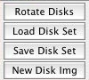
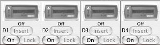
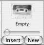
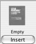
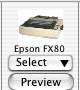
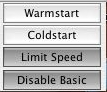
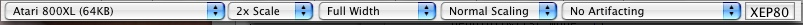

Media Status Window
| |
Atari800MacX Help Media Status Window |

This section of the window provides pushbuttons alllowing you to access some of the common disk functions that are normall available in the Media menu or the Disk Drive Managment window. See the Media Menu help page for full explainations of the commands.
Displayed Drives selector:
Disk Drive Status Display/Buttons:
This section of the window controls which disk drives are shown in the Disk Drive Status display to the right of it. You may choose to display either D1 through D4, or D5 through D8.
Cassette Drive Display/Buttons:
This section of the window allows you to control one of the emualted disk drives on the Atari. The drive may be turned on/off with the on/off button. If the drive is on, you may insert a disk image by pressing the Insert button. You also can drag and drop a disk image file from the finder to the drive picture to insert the disk. When an image is inserted, you can write protect/unprotect with the Lock/Unlock button. When the drive is write protected, a small lock icon will appear above the lock button. Finally, you can drag disks from one drive to another as well. If you hold the option key while dragging a disk, the disks between the two drives will be swapped, as opposed to just moving the disk from one drive to another.
Status may also be displayed by the drives. The on/off, insert/eject, and lock/unlock buttons will light up/darken when disks are inserted/removed, etc. Also, there are two LED's on the drive. One indicates power, and the second indicates read/write activity, red for write, and green for read. In addition, the sector the drive is reading or writing may be shown on the disk drive door. The activity LED's and sector status displays may be turned on/off on the Display Tab of the Preferences window.
Cartridge Display/Button:
This section of the window allows you to control the emulated cassette drive on the Atari. You may insert or remove a cassette image with the Insert/Eject button. When a cassette is inserted, the slider may be used to change the tape position, and the counter will indicate where the tape is, in block count. You can also drag a cassette image file from the finder and drop it on the cassette picture. The New button will allow you to create a blank cassette file (.cas). It will ask you for the name of the new image, then create the file, and insert it into the cassette drive. The button with a red circle on it is the Record button, and may be pressed to enable writing to the cassette. The Lock button allows the user to write protect the cassette image to prevent overwriting it.
The emulator supports reading and writing from/to cassette images. Once the cassette is started by holding start during reboot, or by using the CLOAD/CSAVE basic call, you must press the space bar to continue loading/saving the file.
Printer Control Menu/Button:
This section of the window allows you to control the emulated cartridge slot on the Atari. You may insert or remove the cartridge image using the Insert/Eject button. You can also drag a cartridge image file from the finder and drop it on the cartridge picture.
If the cartridge is a SpartaDosX cartridge, a second button will appear. This will allow you to insert or remove a "piggyback" second cartridge.
Emulator Control pushbuttons:
This section of the window allows you to chose which printer emulation you are using from the "Select" pulldown. You may choose the Text Printer, Atari 825, Atari 1020, or Epson FX-80. The picture of the selected printer will be displayed in this section. The menu also has an option to reset the printer, which is equivelent to turning the printer off and on. The Preview button is used to view what the current printer output looks like. It is active for every printer emulation except the Text Printer. For more info on Printer Emulation, see the Printer Emualtion help page. For setting the printer options, see the Printer Tab in Preferences.
Emulator Control pulldowns:
This section of the window provides pushbuttons alllowing you to access some of the common emulator control functions that are normally available in the Control Menu. See the Control Menu help page for full explainations of the commands.

This section of the window provides five pulldowns which allow the user to choose the type of machine that is emulated, along with aspects of how it is displayed. You can choose the width of the window, type of window scaling, TV artifacting type, and type of 80 column card connected. Finally, there is also a button which allows you to chose the 80 column display, or the normal Atari display. It is only enabled if an 80 columne card is connected.